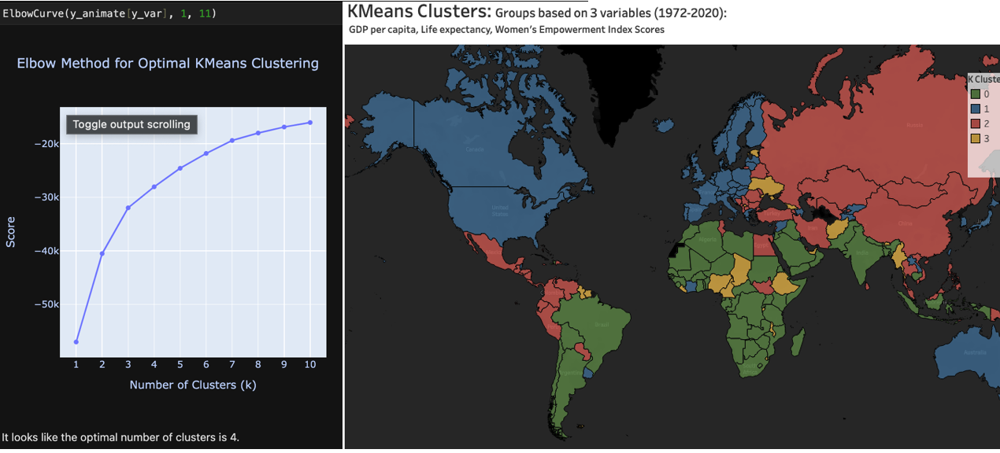
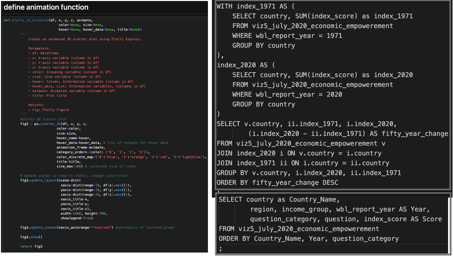
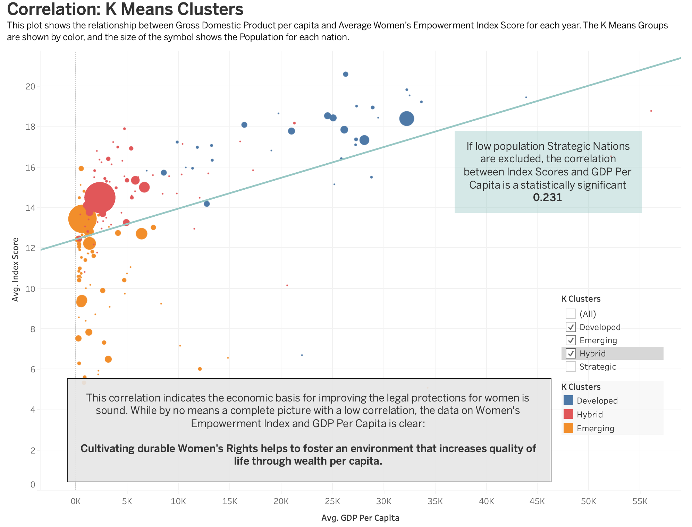
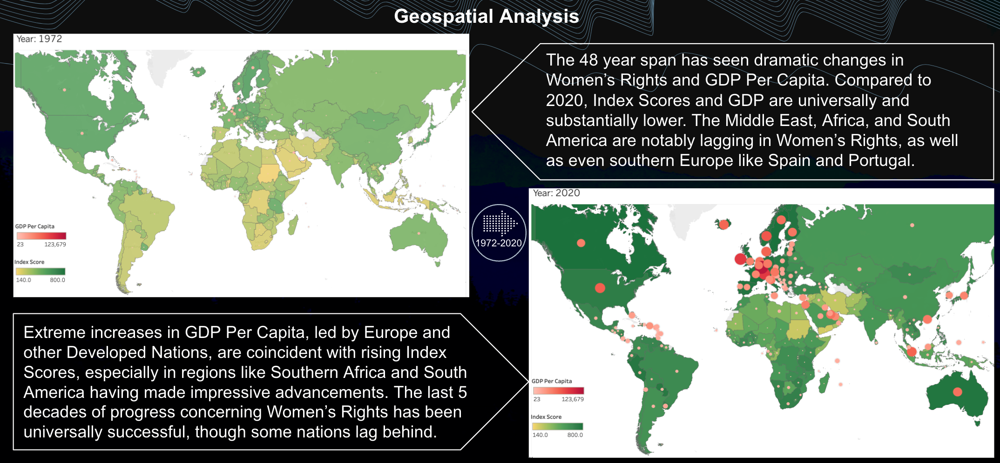
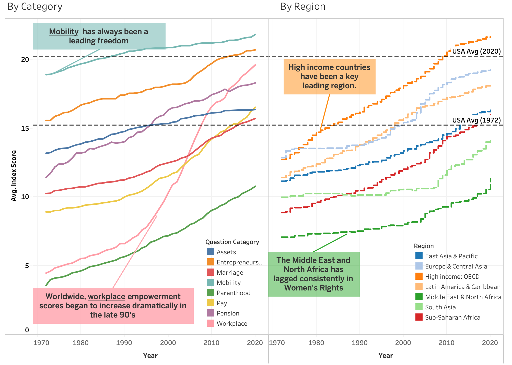

Over a span of 48 years (1972-2020), our comprehensive analysis covers 190 countries.
The index explores women's empowerment through responses to 35 yes or no
questions annually across eight categories: Assets, Entrepreneurship, Marriage, Mobility,
Parenthood, Pay, Pension, and Workplace. The data is can be found
here.
Each affirmative response carries a weight of either 20 or 25 points, while negative responses
contribute zero points. Remarkably, no country exhibits negative growth in the index over this
extensive timeframe.
The GDP per capita, Life Expectancy, and Population data sourced from the World Bank and can be
found here.
K Cluster Algorithm
Grouping countries was a multivariate process and included Women's Empowerment Index scores, Life Expectancy, and
GDP Per Capita. This led to some interesting results, as the dividing borders between country
clusters are immediately noticable as geopolitically relevant.

Python and SQL
The site at data.world allows querying using SQL, and taking advantage of this yielded some interesting directions
for the data.

A simple function written to make use of Plotly's powerful multi-dimensional charting software yields
interesting results when paired with optimal number of KMeans groups. This animation shows Women's Empowerment Index scores (z-axis),
GDP Per Capita (y-axis), Life Expectancy (x-axis), and Population (size of symbol), as well as k-clusters (color). Hovering over allows
more information pertaining to each country, and the animation can be started or stopped by utilizing the bottom year bar.
As we can now see, the blue Developed Nations are ahead in all relevant metrics except Population. This lead, especially in Women's
Empowerment scores, only grew markedly over the years. The relationship between Empowerment scores and GDP per capita specifically must be
statistically analyzed next.
Quantifying Empowerment and GDP
The main 3 K Means clusters of countries, Developed, Emerging, and Hybrid nations, have a higher R2 without Strategic nations.

Trends in Women's Rights
Globally, there have been major strides toward gender equality in every nation on Earth.

In no time period, in any nation, did Women's Rights lose ground after an advancement. Women's Empowerment
scores are extremely durable once achieved.

Conclusions
In an era characterized by sweeping global transformations, we find ourselves at the precipice of a new world.
The role of women and their empowerment stands as a pivotal story upon which equality and a free future relies.
We posit that unlocking the potential of half the global population is both an ethical imperative and an economic
opportunity. Our analysis embarks on a fifty-year exploration of the correlation between the Global Women's Empowerment
Index and GDP Per Capita. We assert that economic vitality and gender equality go hand in hand, but we are resolute in
adhering to a data-driven approach. Our focus remains grounded in the pursuit of freedom and equality, recognizing the
inherent value in the orientation towards a more equitable world.
Tableau Dashboard
The entire dashboard is found below, note the ability to choose exact questions and view the evolution of
the struggle for that Women's Right globally.
Manzano Analytics: The Economy of Women's Rights
Lessons Learned:
Sourcing and Researching Data
Sourcing relevant data is important for the integrity of any project. The primary source of data was found on data.world's makeover monday
data challenge. Immediately I considered how these changes could affect GDP. The World Bank has the gold standard data for econometrics like
GDP per capita, population, and life expectancy, so I used them for the dependant variables.
Correlational Analysis
Recognizing the significance of discarding irrelevant data is crucial in the research process.
At the project's outset, I meticulously examined multiple data sources to uncover significant correlations with
the Women’s Empowerment Index across time. Yet, amidst this exploration, certain datasets only muddied the waters,
overwhelming the signal with noise. Consequently, these extraneous sources were promptly set aside. Notably, the data
streams encompassed GDP Growth Year-over-Year and the Cost of 1Gb of mobile data from Kaggle, alongside the 50-year
change of Empowerment Index sourced through SQL querying data.world.
Advanced Python Visualization
Plotly 3D animations enable simultaneous visualization of six dimensions: x, y, and z axes, color, size, and time.
This is a visualization densely packed with information, and can be extremely useful for
gaining relevant context in a multitude of situations.
This cost-benefit analysis is in a context of a fictional, globally operating movie rental business on the brink of expansion. Its primary goal is to employ strategic decisions that result in an augmentation of overall profitability.
Every year, hospitals are faced with staffing challenges due to the influx of influenza patients. This prescriptive analysis uses USA CDC data and seeks to define and direct staff from low-need states to high-need states.